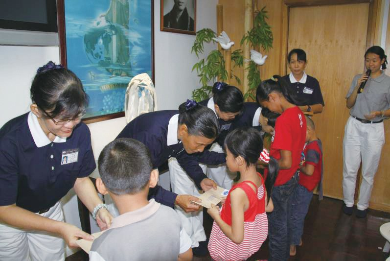
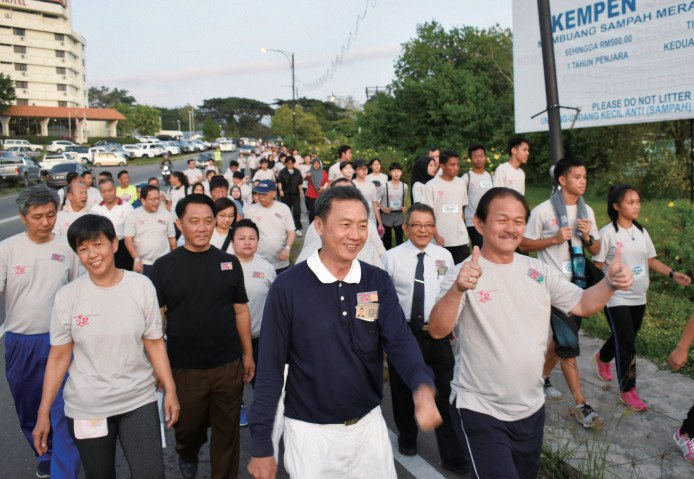
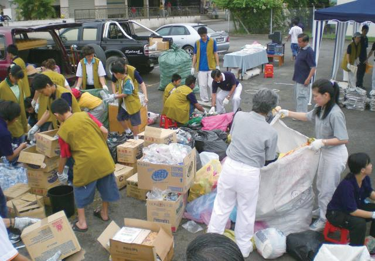
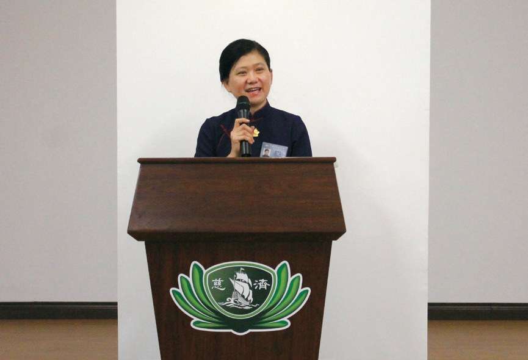
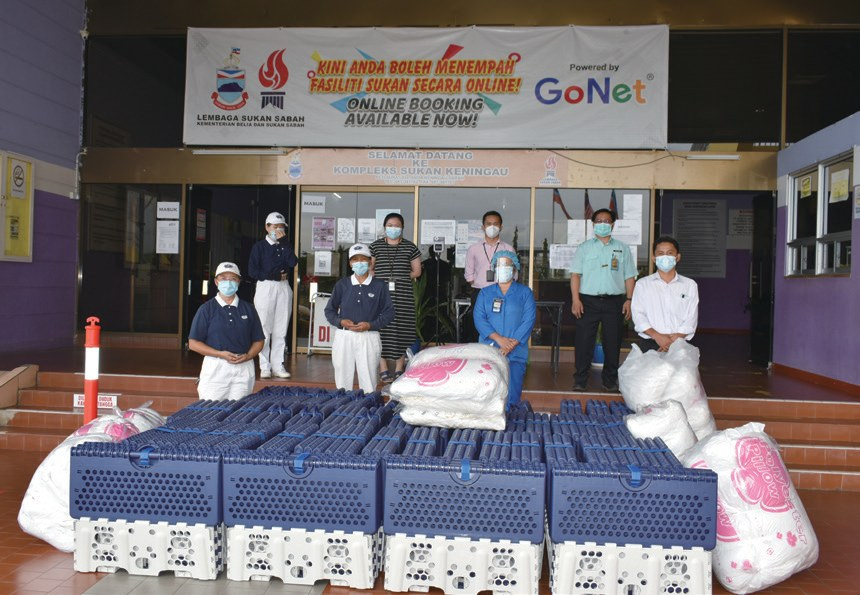

根地咬聯絡處
一位不能說話的志工，怎樣帶動大家做環保？

先別急著下結論，讀完再說說你的想法～
這一篇講根地咬聯絡處：2002年，一位佛學班老師參加了一場靜思語講座，慈濟就在沙巴內陸生根。
你會讀到老闆借出的會所、常常故障的洗腎機、跟著環保卡車跑的聾啞志工，還有一位把自己比作火車頭的負責人。
下面是原書的節錄，紅色底線是我們替你標出的轉折點。
讀之前：一個人不能說話，還能帶動別人嗎？
從佛學班開始
2002年，一位佛學班老師與慈濟結緣。閱讀引導
根地咬廣濟寺佛學班老師陳明芬（慈晛）參與亞庇慈濟教聯會舉辦的靜思語教學講座會，而與慈濟結緣。
2004年，陳明芬的親人相繼罹患癌症，在陪伴家人治療的過程中，她深刻體會生命無常，因而發心要深入佛法行善。

反而讓她更想行善。
陳明芬時常和同事分享慈濟，包含任職公司的老闆楊瑞昌；楊瑞昌在陳明芬的分享下，很認同慈濟的慈善理念。
楊瑞昌得知根地咬慈濟尚未有固定的共修場所，於是發心借出阿蒂卡商業中心二樓作為慈濟人的共修處，並於2007年元旦慈濟根地咬共修處正式啟用。
老闆借出會所！
- 167人志工p.802
- 2,571人會員p.802
讓孩子安心讀書
寄宿學校裡，來自偏遠部落的孩子。閱讀引導
亞庇與丹南志工時常來帶動、陪伴根地咬志工如何做慈濟，分享訪視個案要注意的事項，也為新加入的志工解惑。
寄宿學校的孩子多來自各個偏遠部落的窮困家庭，有的甚至是一家十口擠在僅以竹片搭成的簡陋小屋，家中無法正常提供學費及生活費。
擠在竹片小屋裡……
志工因訪視而走入當地暗角，發現這樣的案例不只是在寄宿學校中，到處都有因為家庭經濟不許可，而不得不輟學，或是依靠父母借貸才能上學的孩子。

- 56人受惠學生p.803
- 8,400令吉頒發的助學金p.803
守護腎友和醫護
洗腎的人越來越多，設備卻不夠。閱讀引導
院方向慈濟提出合作援助擴建洗腎中心的計劃，希望能照顧更多病患。
「很感恩慈濟協助籌建洗腎中心，對醫院及根地咬的居民有很大的幫助。」
根地咬醫院院長羅莉醫師表示・p.804
根地咬志工自4月20日起，以行動感謝在前線付出的醫護人員，每日前往根地咬醫院及根地咬師訓學院的臨時隔離中心，為醫護人員送上素食便當。

謝謝前線的醫護！
「目前島上疫情嚴重，甘榜沙古京的患者節節上升，醫護人員勞心勞力、身心疲憊，還好有慈濟志工的關懷與協助。」
納閩醫院副院長伊斯文特感激地表示・p.805在迫不得已的情況之下，院方只能請腎友到其他地區的醫院，如路途相對較遠的亞庇洗腎。部分貧困的病友因需要支出更多的費用，而造成延後就醫和拖延洗腎的時間。
還要跑那麼遠……
猜一猜閱讀引導
2021年9月，志工得知根地咬醫院的洗腎機常常故障。慈濟捐贈了幾臺洗腎機？
用行動說話
一位聾啞志工，和整個社區。閱讀引導
2006年9月24日，根地咬首個環保點於郵政局旁的停車場啟用，每個月的第四個星期天為回收日。
根地咬志工積極推廣環保的行動，深獲當地政府認同，並於2013年提供兩個位於縣中心的環保站予根地咬聯絡處，由志工負責承擔帶動當地民眾做環保。

根地咬環保志工王明武在五歲時發高燒後，不幸成為聾啞人士。2008年，姊姊王明月帶著王明武一同參與慈濟活動，並投入環保志業；……
怎麼做環保？
而他每天跟著環保卡車收取資源的那分精進，讓許多商家看見他的用心，紛紛將資源整理好，讓他方便收取。王明武做環保的堅持和毅力，感動了許多人，也因此接引了不少環保志工。

商家都被感動了！
他雖然無法像一般人一樣用言語表達，但藉由身體力行，傳達對大地的愛，實踐上人所說「垃圾變黃金，黃金變愛心，愛心化清流，清流繞全球」。
- 3個慈濟環保站p.807
- 4個環保點p.807
菩薩道上不孤單
根地咬的第一顆種子。閱讀引導
身為根地咬首顆慈濟種子的陳明芬，於2009年返臺受證，以歡喜心來迎接成為委員的這一刻。她比喻自己如火車頭，一定要行得正，才能帶動當地的志工，一起推展慈濟志業，這是她一路走來所堅持的信念。

後面的車廂才跟得上！

「……面對任何問題，我會很勇敢地面對，畢竟菩薩道上不是只有我一個人走，有這麼多慈濟人一起，感覺並不孤單。」
陳明芬說・p.810就不孤單了。
「……任何一個時候接到任務，克服困難，就是要行，這讓我很感動。想到這些慈濟人他們都有做到，這不是文字的言辭，是真實在人間做，是行在菩薩道上。」
上人感恩根地咬的環保菩薩・p.810停一停：誰讓你記住了？閱讀引導
選一位你印象最深的人。沒有標準答案。
有人把自己比作火車頭，有老闆借出會所，有聾啞志工跟著卡車收回收，有實業家提供空地。哪一位讓你最有感覺？

一起回頭看看吧～
回望
依本章原文整理，每一條都標了原書頁碼。閱讀引導
背後原因
根地咬怎樣有了會所

小川一開始沒有共修的地方，後來怎麼有了會所？
- 分享慈濟
陳明芬常和同事分享慈濟。p.801
- 老闆認同
老闆楊瑞昌很認同慈濟的理念。p.801
- 共修處啟用
2007年元旦根地咬共修處啟用。p.801
後續發展
根地咬一路走來

小禾從一場講座到捐贈洗腎機，經過了多少年？
- 2002
陳明芬與慈濟結緣。p.801
- 2006.9.24
首個環保點啟用。p.806
- 2007.1.1
根地咬共修處啟用。p.801
- 2008.5.1
升格為聯絡點。p.801
- 2018.11.4
「萬眾一心，募愛腎友」義跑。p.804
- 2021.9.13
捐贈七臺洗腎機。p.806

腎友的處境
以前和後來
小川慈濟幫忙之後，根地咬的腎友有什麼不同？
- 醫院洗腎設備不足洗腎中心動土擴建p.804
- 洗腎機經常故障捐贈七臺洗腎機p.805–806
- 要到較遠的亞庇洗腎可以安心在當地就醫p.806
以上只整理本章寫到的事；書裡沒寫到的，我們不替它下結論。
回頭看讀前的選擇閱讀引導
王明武無法言語，仍用肢體語言向居民示範分類（p.807–808）；他每天跟著環保卡車收資源，讓商家紛紛把資源整理好（p.808）。不用開口，行動本身就會說話。
現在能照顧多少腎友？
只有你自己看得到喔！
準備好了就一起出發～